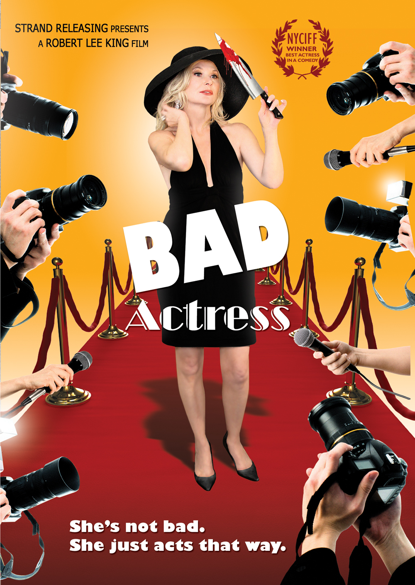
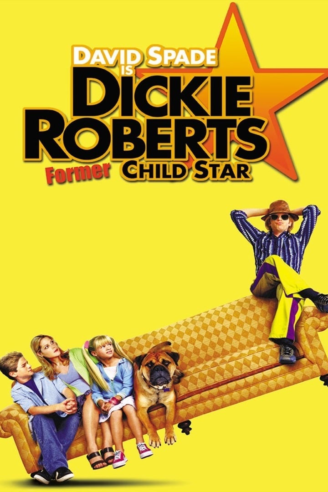

Movies Written/ Starring Nancy Pimentel
-

Bad Actress
Descrption:
Alyssa Rampart Pillage is a washed up TV queen whose career has been reduced to starring in commercials for her husband Bernie's appliance empire. When their tree hugging daughter Topanga dies in a tragic golf ball accident, Bernie goes off the spiritual deep end and tries to give away their fortune with disastrous results. But what starts off as tragedy quickly turns into career re-invention for Alyssa. And as the body counts rises, so does her star. Bad Actress is a guilty pleasure of a film that gleefully mocks the world of Hollywood and Fame, which reminds us that Justice has nothing on Celebrity. -
Dumb and Dumberer
Description:
It's the 1980s, and it's the moment that Lloyd Christmas and Harry Dunne meet. The two individuals are seen by many as 'special', and become best friends as soon as they meet. Principal Collins and his lover, the lunch lady Ms. Heller, want to make as much money out of scams, and their next idea is to create a special needs class. Ms. Heller is the teacher, and they have assigned Harry and Lloyd to round the special students up. School News Reporter Jessica is suspicious though, and desperately tries to find out the truth, even if it means gaining Harry and Lloyd's help. -

Prey for Rock & Roll
Description -

The Sweetest Thing
Description -

Dickie Roberts: Former Child Star
Description